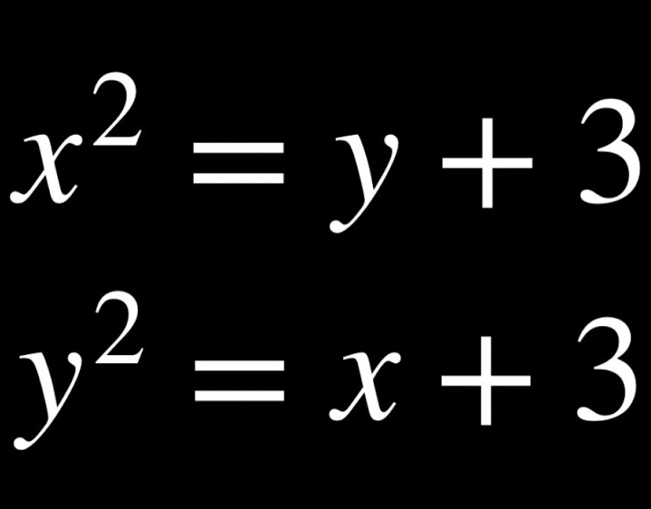
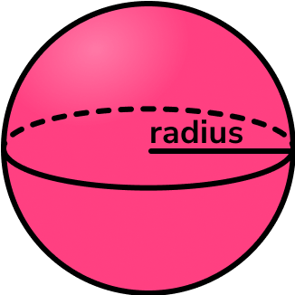
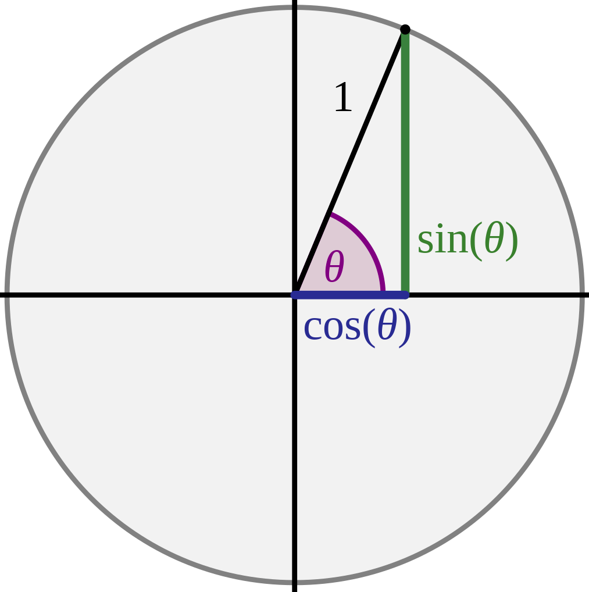
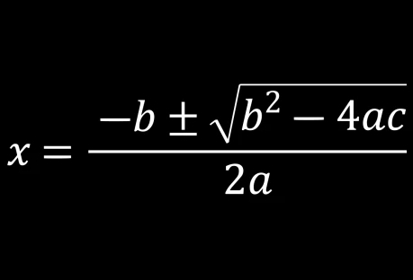
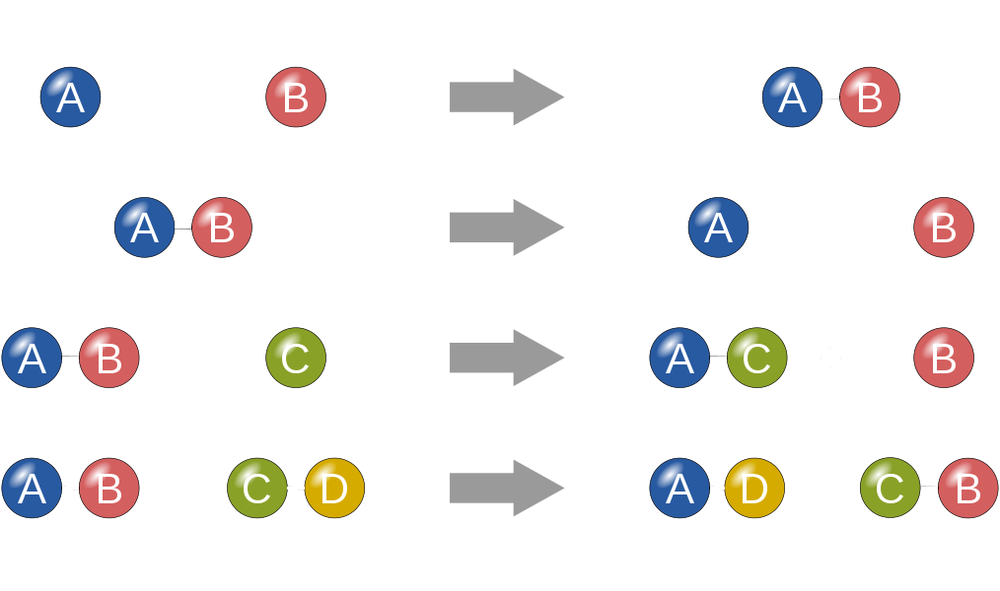

*If you are looking for a subject that is not listed here, send us an email!
CLTutoring is not limited to only these subjects!*
*We also tutor every subject taught in 6th grade and below!*
COMPUTER SCIENCE (CODING)

HTML
HTML is the foundation of modern website development, serving as the backbone for creating
web pages. When combined with CSS and JavaScript, these 3 languages create dynamic and visually appealing websites
just like the one you're browsing now. At CLTutoring, we offer students solid understanding of the basics and hands-on
practice to strengthen their skills in writing clean and efficient HTML code.

CSS
CSS is a programming language that is used along side HTML to enhance the visual appearance of
the website. With CSS, you have full control over the styling and presentation of websites. It allows you to
customize elements such as font colors, backgrounds, layouts and more. If you're interested in learning CSS
alongside HTML, CLTutoring offers sessions to help you practice enhancing HTML code with CSS.

Java Script
JavaScript is a programming language that adds dynamic functionality to websites.
With JS, you can create interactive forms, perform calculations, manipulate HTML elements and more. JS
works with HTML & CSS to bring web pages to life. CLTutoring covers the important fundamentals of JavaScript,
equipping students with the skills to learn the full potential of this language in web development.
PROGRAMMING BASICS
Learning about programming basics is very important if you are interested in the computer
science field. Programming basics is the foundation for learning any coding language and the first step in your
computer science journey. At CLTutoring, you will learn about various programming concepts, including binary,
variables, data types, loops & conditionals, and functions.
PYTHON
Python is a widely-used programming language known for its simplicity and readability.
It is used to simplify complex tasks and accelerate development in data analysis, web development, artificial intelligence,
and more. At CLTutoring, you can learn about essential concepts, including variables, conditionals, loops,
functions, classes, and objects.
MATH

Algebra
Algebra is the underlying branch of math that deals with symbols, variables
and equations. It involves solving equations to find unknown values called variables (like X). In
advanced algebra, you can learn about factoring, systems of equations, and polynomials expressions.
At CLTutoring, students are guided through the important fundamentals of algebra to get ahead in school,
or get help with their algebra in any math classes.

Geometry
Geometry is a concept that explores the properties and relationships of various shapes,
including quadrilaterals, triangles, circles and more. In this subject, students learn about angle relationships,
such as supplementary, complementary, or patterns like parallel or transversal. Additionally, students
gain an understanding of how to calculating volumes in 3D shapes (cubes, spheres, etc).

Trigonometry
Trigonometry is a slightly advanced subject that studies the relationship between
angles and sides of triangles. By studying this subject at CLTutoring, you can gain help with your trigonometry
homework, or dive into new concepts such as sine, cosine, and tangent that allows you to calculate unknown
triangle sides/angles by using given information. Not only this, but students will gain an insight into the
Unit Circle.

Graphs & Transformations
In the subject of Graphs & Transformations, students gain understanding in functions
and explore their graphical representation. CLTutoring focuses on understanding how different types of
functions behave, their properties, and how they can be 'transformed'. Students also gain insights into
key concepts such as domain, range, intercepts, end behaviors, and asymptotes on a graph.

Statistics & Probability
Statistics & Probability is a subject that revolves around data analysis, and the
exploration of probabilities (chance of something happening). For example, understanding the likelihood
of different events happening, like flipping a coin and getting heads multiple times in a row. By selecting
this subject, students learn about probabilities, along with concepts in statistics, such as
calculating measures of central tendency, such as mean, median, and mode.

Math 1-3 & Pre-Calculus
This subject is great for students that need general help with their math in school.
Our tutors will focus on assisting you with your math problems, making sure you understand the concepts
taught so you are prepared. Students may also take this subject in order to get ahead in their maths,
especially in higher level maths that the other subjects may not include. This subject mostly
covers important topics that are not mentioned in the other subjects, going up to Pre-Calculus.
CHEMISTRY

Chemical Foundations
Chemical Foundations is an exciting subject that focuses on the basics of Chemistry
This subject explores important ideas, such as the Periodic Table, structure of atoms, and the roles of
electrons, neutrons, and protons. Not only this, but Chemical Foundations sets the stage of what
Chemistry is about, so students that are interested in seeing what Chemistry is and what is taught
should consider being tutored in this subject.

Chemical Reactions & Bonding
This subject dives deeper into the Chemistry field, teaching another set of ideas
such as the different types of chemical reactions, bonding, and intermolecular forces. Not only this,
but this subject also teaches students properties of different elements of the periodic table, along
with the states of matter. *It is recommended that unless the student specifically needs help in this field,
they learn Chemical Foundations first.*

Stoichiometry & Nomenclature
Stoichiometry & Nomenclature is a subject in Chemistry that connects to chemical
reactions. Stoichiometry deals with balancing chemical reaction equations, while Nomenclature looks at the
chemical names of different molecules. It also focuses on chemical formulas of different reactions.
*It is recommended that unless the student specifically needs help in this field, they learn Chemical
Foundations and Chemical Reactions & Bonding first.*
*Know that these subjects are NOT set in stone, our tutors are VERY flexible and are willing to work
with you no matter what you need help in (even if it is just advice). If you have any questions,
please do not hesitate to contact your tutor or email CLTutoring@gmail.com.
.jpg)